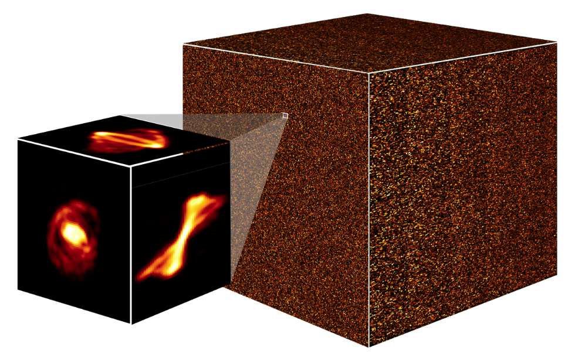
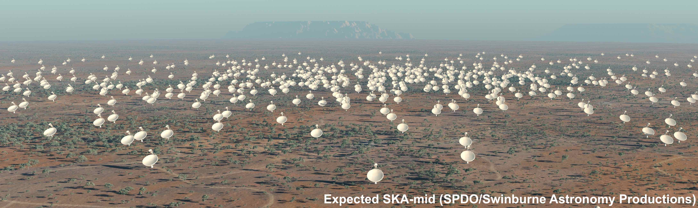
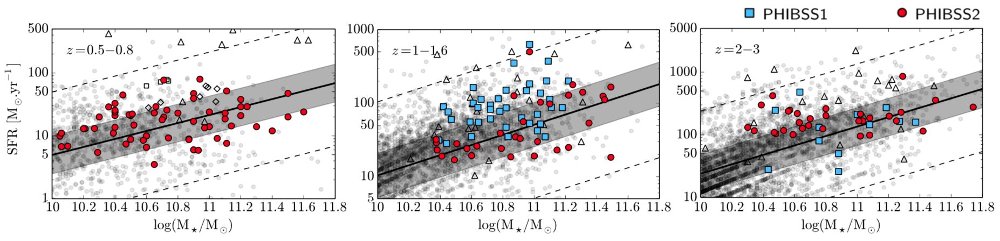

SKAI am a member of the Square Kilometer Array (SKA) Extragalactic Spectral Line science working group, dedicated to emission line observations other than HI 21cm with the upcoming SKA radio telescope. This working group notably advocates for an increase of SKA-1 band 5 frequency coverage, from 13.8 to 24 GHz, which would enable to observe the CO(1-0) line from z=3 upwards with SKA-1 and hence to probe the CO molecular gas throughout most of the Universe's history when combined with measurements from PHIBSS, PHIBSS2, and low-redshift programs such as xCOLD GASS.
■ SF2A 2018 conference proceedings, AS SKA/LOFAR: Probing gas reservoirs in galaxies throughout the history of the Universe [PDF].
I am also part of the MINERVA team participating in the second SKA Science Data Challenge. The goal of the challenge is to detect and classify sources in simulated SKA data, for which we notably use machine learning methods.


30m, NOEMA, ALMATo investigate star formation at different epochs and in different environments, I am involved in various radio observational programs at IRAM 30-meter telescope, IRAM Plateau de Bure/NOEMA interferometer, and ESO Atacama Large Millimetre Array (ALMA). In particular, the PHIBSS and PHIBSS2 programs survey the molecular gas properties of typical star-forming galaxies at different epochs through their carbon monoxyde (CO) emission lines.
■ The PHIBSS large program at IRAM Plateau de Bure interferometer (2010-2013) targeted 52 sources at z=1-2 and included 8 high-resolution follow-ups. My contribution consisted in establishing a resolved Kennicutt-Schmidt relation at the peak epoch of star formation in Freundlich et al. (2013) [PDF]. The PHIBSS data cubes can be found here.
■ The PHIBSS2 legacy program at IRAM NOEMA interferometer (2013-2017) targeted ~120 sources during the peak epoch of star formation (z=1-1.6), its building-up (z=2-3), and its winding-down (z=0.5-0.8). The survey is presented Freundlich et al. (2019) [PDF], whose full z<1 data tables can be found here (ascii file). This catalog notably includes the positions and redshifts of the sources, their stellar masses, star formation rates, CO line widths and integrated fluxes, derived molecular gas masses, HST I-band morphology and size measurements as listed in the four tables of the article. The bulge/disc decomposition scheme used can be found on GitHub here. The PHIBSS2 data cubes can be found here.

The PHIBSS and PHIBSS2 samples in terms of their stellar mass and star formation rate (SFR), from Freundlich et al. (2019). The surveys probe the peak epoch of star formation (z=1-1.6), its building-up (z=2-3) and its winding-down (z=0.5-0.8). A pdf version of the figure can be found here.
Ongoing projects
■ NOEMA: Probing the molecular gas content of galaxies in an over-dense group at z~0.7: a test case for environmental quenching (S19BV, 19h).
■ ALMA: Inventory of molecular gas in a z~0.7 galaxy group: a test case for environmental star formation regulation in galaxies (2018.1.00876.S, 10.3h).
■ NOEMA: Molecular gas reservoirs during the shutdown of star formation at z~2 (W18DV, 25.5h).
■ NOEMA: Probing the molecular gas content in galaxies with gas flows: a test case for self-regulated star formation models (W18CS, 24.6h).


Useful tools for radio-astronomy
■
■
■ NOEMA data reduction cookbook.
■ IRAM GILDAS tutorials.
■ IRAM 7th 30m summer school tutorials.
■ IYAS school on large ground-based 21st century radio instruments tutorials.
■ ALMA sensitivity calculator.
■
■ ALMA casa guide, including simulation tools.
■ IRAM ALMA Regional Center.
■ Action Fédératrice ALMA/NOEMA/Herschel de l'Observatoire de Paris.
■ Action Fédératrice Radiotélescopes du XXIe siècle de l'Observatoire de Paris.
■ Action Spécifique SKA-LOFAR du CNRS.
■
■ About the SKA Regional Centers.
■
■ Marc Huertas-Company's deep learning tutorial.
■ MINERVA - Machine Learning for Radioastronomy at Observatoire de Paris.